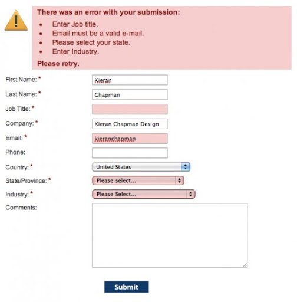

Geef de gebruiker controle
Het is belangrijk dat de gebruiker voldoende controle over het systeem heeft. Wat ook belangrijk is is dat het systeem pas iets doet als de gebruiker dat wilt & een overzichtelijke en eenvoudige navigatie en knoppen zijn natuurlijk ook belangrijk.
Status en feedback

- De status geeft de toestand van het systeem.
-
- Een voorbeeld daarvan is de indicator bovenin het scherm van een smartphone.
- Als je de knop indrukt en er lijkt niks te gebeuren is dat vervelend, omdat het dan niet duidelijk is of het systeem iets aan het doen is. Je kan door de knop onklikbaar of disabled te maken aangeven dat het systeem iets aan het doen is. Mensen hebben vaak ook een hekel aan wachten. Het helpt dan als ze een goede feedback krijgen. Zo kunnen ze zien op wat en hoelang ze moeten wachten.
Foutmeldingen voorkomen
Het gebeurt wel eens dat de gebruiker een fout maakt. Een foutbericht is een makkelijke, maar niet slimme vorm van feedback. Als een gebruiker een ‘error’ te zien krijgt, bestaat de kans dat hij of zij stopt met het gebruiken van je product. Je kunt beter fouten voorkomen dan achteraf een foutmelding sturen. Op plaatsen waar bezoekers gegevens moeten invullen, kun je de gebruiker al sturen met slechts enkele aanpassingen. Op het internet krijg wel eens te maken met de foutmelding 404, die optreedt als je een webpagina probeert te bezoeken die niet bestaat. Het kan zijn dat de pagina echt niet (meer) bestaat, of dat je een typefout hebt gemaakt. Een speciale pagina ontwerpen die weergeven wordt als er een 404-foutmelding komt, is een goede oplossing.